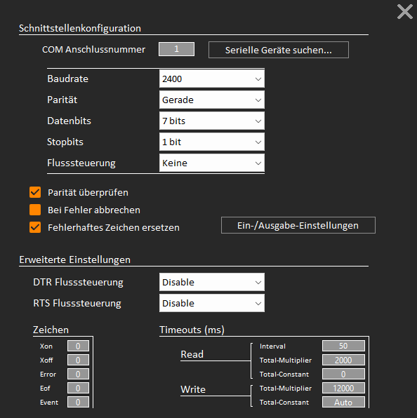

Die Schnittstelle kann über die App-Einstellungen ausgewählt und konfiguriert werden.

Über den Button 'Serielle Geräte suchen' werden alle im System verfügbaren Geräte aufgelistet.
Die allgemeinen Schnittstellen-Parameter sind für EPL2-Steuerungen gesetzt, lediglich die Baudrate muss individuell an die entsprechende Maschine angepasst werden.
Veränderungen an den erweiterten Einstellungen sollten nur vorgenommen werden wenn die Auswirkung der einzelnen Werte bekannt ist. Die gesetzten Werte sind Standart-Werte und sollten für fast alle Anwendungsbereiche passen.
Über den Button 'Ein-/Ausgabe-Einstellungen' kann das Verhalten der Ausgabefensters und die Ausgabe-Formatierung festgelegt werden.
Zum Senden und Empfangen von Daten werden die letzten beiden Schaltflächen der oberen Toolbar verwendet. Alternativ kann auch mit Strg+T gesendet und mit Strg+R empfangen werden.
Senden:
Wird der Sendevorgang gestartet, öffnet sich das Ausgabefenster (sofern das Monitoring aktiviert ist). Gesendet wird der aktuelle Inhalt des
aktiven (sichtbaren) Editors bzw. Tabs. Nachdem alle Daten gesendet wurden schließt sich das Ausgabefenster automatisch. Dies kann in den Einstellungen
deaktiviert werden. Ist die ausführliche Ausgabe aktiviert, dann werden erweiterte Informationen im Ausgabefenster angezeigt. Bei eventuellen Übertragungsproblemen
kann das eine Hilfestellung sein.
Empfangen:
Wird der Empfangsvorgang gestartet, öffnet sich das Eingabe-Fenster (sofern das Monitoring aktiviert ist). Es wird auf eintreffende Daten gewartet.
Ist der Vorgang abgeschlossen, kann der empfangene Inhalt in der aktiven Tab übertragen oder verworfen werden.